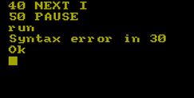
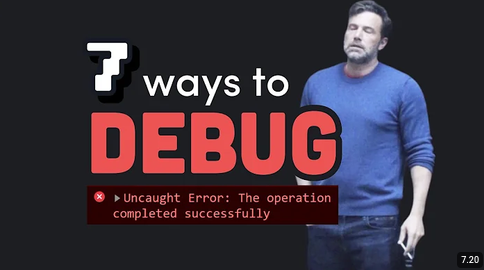

Apa itu Debugging?
Debugging adalah proses mencari dan memperbaiki kesalahan (bug) dalam program komputer.
"Debugging is twice as hard as writing the code in the first place. Therefore, if you write the code as cleverly as possible, you are, by definition, not smart enough to debug it."
— Brian W. Kernighan, The Elements of Programming Style
Pada artikel ini, kita akan bahas tentang Debugging, terutama pada cara melakukan debugging itu sendiri.
Debugging

Jadi apa itu Debugging? Debugging adalah proses untuk memahami sebuah kode sekaligus memperbaikinya dengan logika yang benar.
Debugging seringkali ditemui ketika kau membuat aplikasi dengan jumlah baris kode yang tidak sedikit. Tak hanya itu, Debugging sangat penting sebelum aplikasi di launching ke public.
Baca Juga: Git: Sang pengontrol versi terbaik andalan programmer
Code Reading
Untuk melakukan Debugging, seseorang harus memiliki kemampuan untuk memahami sebuah kode baik dari arsitekturnya hingga relasinya dengan baris kode lain. Coba perhatikan penggalan kode berikut:
<link rel="stylesheet" href="../../assets/css/style.css">Apakah kau bisa memahami kode berikut? jika tidak, biar kujelaskan. Kode tersebut mengartikan kode html untuk mengambil file css di dalam folder yang berada di 2 tingkatan folder lalu masuk ke dalam folder assets/css/ dan mengambil file style.css. Kurang lebih strukturnya seperti ini
MyProject/
├── index.html
├── assets/ <- menggunakan ../.. untuk masuk ke folder ini
│ ├── css/
│ │ └── style.css <- masuk ke folder css dengan kode assets/css/ dan ambil style.css
├── folder1/
│ └── folder2/
│ └── index.html <- Ini kode htmlmuIni adalah contoh sederhana dari relasi antar file dan code reading. Namun, contoh seperti ini tidak sering digunakan karena setelah kau berada dalam dunia programming cukup jauh, kau akan menggunakan framework dan tiap framework memiliki caranya masing-masing. Sebagai contoh cobalah lihat kode yang menggunakan framework laravel berikut:
return view('students.create', compact('student'));Arti dari kode tersebut adalah mengambil kode yang berada di folder resources/views/students/create.blade.php. Kurang lebih seperti berikut:
app/Http/Controllers/StudentsController.php <- file ini mengambil
resources/views/students/create.blade.php <- file iniIntinya setiap framework memiliki cara terhubungnya masing-masing.
Error
Setelah kita mampu melakukan code reading terhadap sebuah arsitektur aplikasi, kini kita bisa lanjut ke hal selanjutnya yaitu error. Sebenarnya untuk memperbaiki error, sama seperti code reading yaitu kita harus bisa membaca error itu sendiri.
Contoh sederhana dari error adalah Syntax Error, coba lihat kode berikut:
if a <= 1
print("Lebih dari satu")
else
print("Kurang dari satu")Bisa tebak dari mana errornya? Jika tidak tahu, biarku jelaskan. Kode tersebut adalah if conditional dari bahasa pemrograman Python. Di dalam python, kode harus ditulis dengan cara berikut:
if <variabel> <kondisi> <nilai>:
<sesuatu>Dari sini harusnya kau sudah tahu masalahnya, kode sebelumnya tidak memiliki tanda : yang membuat python tidak mengerti dengan kodingan yang kita minta. Jadi, cobalah pahami secara seksama kode yang error. Biasanya, bahasa pemrograman akan memberitahu kita bagian mana yang error dan kurang apa. Tetapi jika tidak, cobalah pikirkan bahwa setiap bahasa pemrograman memiliki syntax yang berbeda.
Baca Juga: Programming yang sebenarnya: Seperti apa cara pikir Programmer?
Itu untuk contoh sederhana, kita masuk pada kesalahan kedua yang paling sering terjadi yaitu undefined variabel. Coba lihat kode berikut:
variabel = 1
print(Variabel)Ingat satu hal yang paling sering kau temui di dalam programming, yaitu bahasa pemrograman bersifat sensitive. Meski kode tersebut kelihatan benar, tapi lihatlah huruf kapitalnya. Masih belum paham? Intinya:
return Return
// Dua kode diatas adalah dua kode yang berbeda.Jadi ingatlah bahwa bahasa pemrograman bersifat sensitif. Lalu setelah itu ada error berikutnya yaitu Runtime Error. Coba lihat kode berikut:
print(10 / 0)Runtime error biasanya terjadi karena kesalahan logika, kau lihat judul artikel ini? memahami masalah dengan logika. Sebenar apa pun kode, jika tidak sesuai logika ya sama saja salah. Dari kode tersebut mengartikan angka 10 dibagi dengan 0. Apakah dalam matematika angka bisa dibagi dengan 0? Ya enggaklah.
Lalu error selanjutnya yang paling sering dialami oleh programmer yang bahkan sudah sering menggunakan framework adalah masalah dependensi. Sebagai contoh kita ambil dari framework laravel, perhatikan kode berikut:
$data = $request->validate([
'nis' => ['required', 'numeric', 'min:20', Rule::unique('students', 'nis')->ignore($student->id)],
]);Tidak ada yang salah kan? benar, jika di bagian atas file kau menambahkan:
use Illuminate\Validation\Rule;Kode sebelumnya terdapat bagian Rule::unique(). Kode tersebut diambil dari dependensi Rule yang ada di folder Illuminate\Validation.
Masih bingung dengan dependensi? dependensi sendiri adalah kode siap pakai yang digunakan untuk membantu developer dalam menulis kode. Jadi sebenarnya, seorang programmer sangat jarang menulis kode dari awal. Kecuali jika mereka seorang yang memang ahli dan memang diharuskan untuk menulis kode dari awal karena beberapa masalah seperti dependensi yang kurang dipercaya dan lain-lain.
Git
Sebelum kau melakukan debugging, cobalah gunakan Git dan buat branch baru untuk membuat lingkungan terisolasi yang tidak memengaruhi kode utamamu. Itu akan sangat-sangat membantu jika kau memiliki banyak sekali error dan tiap error berasal dari lapisan yang berbeda.
Baca Juga: Git: Sang pengontrol versi terbaik andalan programmer
Kesimpulan
Tidak sulit untuk melakukan debugging, yang perlu kau lakukan agar dapat melakukan debugging adalah membaca. Gunakan mata dan pikiranmu untuk meresap maksud dari error yang kau dapat. Error adalah hal yang normal dalam dunia programming. Silakan cek video berikut:
Link ke Video.
